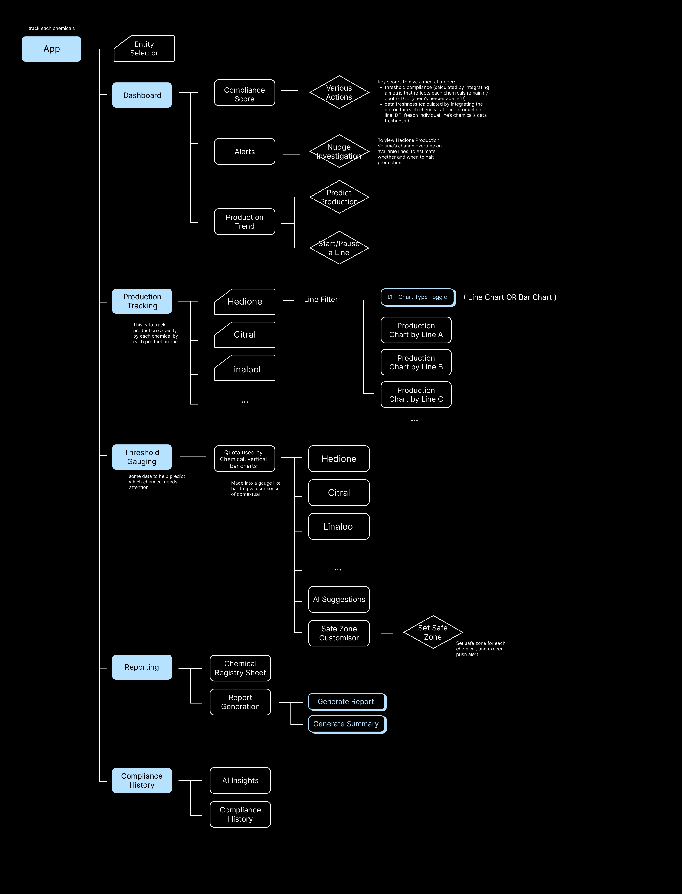
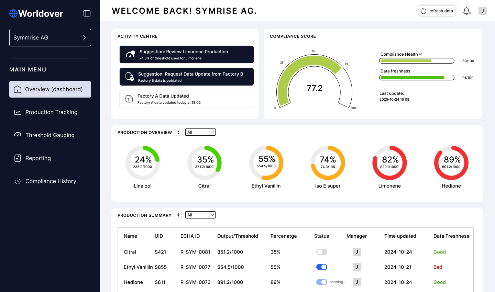
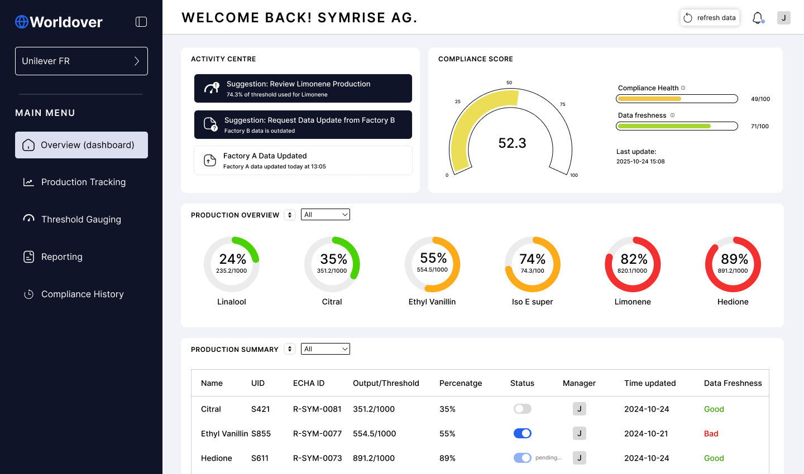
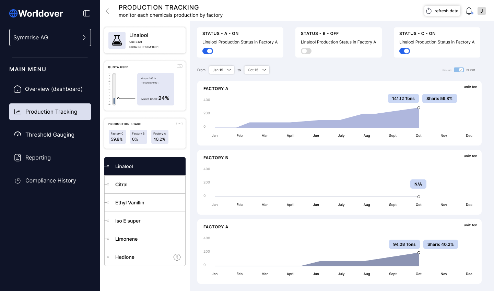
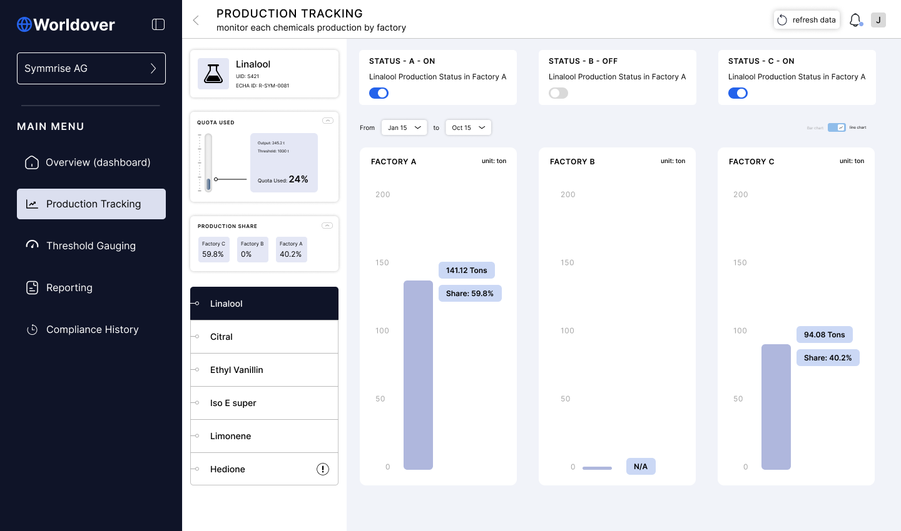
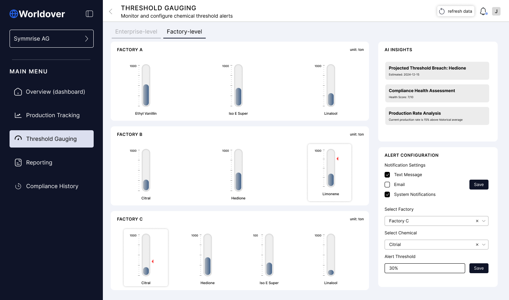
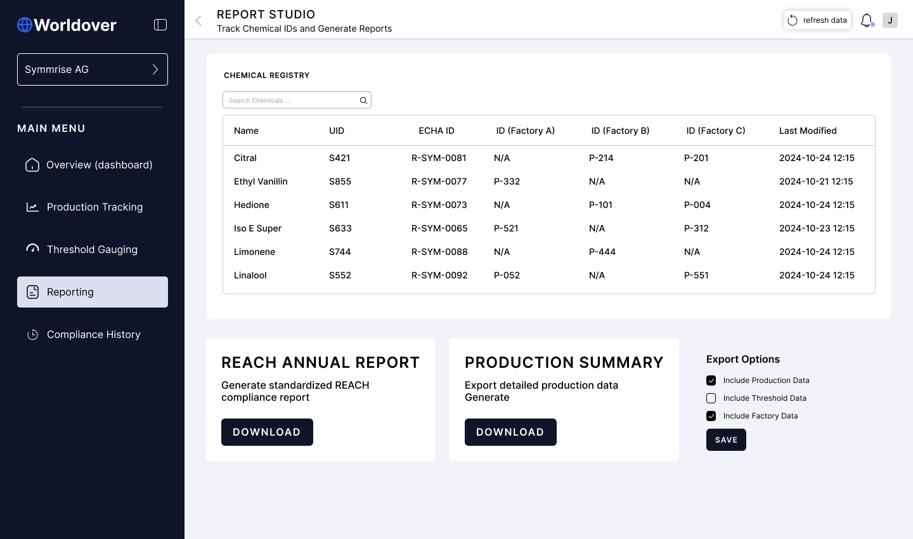

2026
Turn compliance data into a command workflow
Worldover helps teams track compliance risk across legal entities, factories, production thresholds, evidence, and reporting deadlines.
I worked on a one-week product case to define the core workflow and turn it into a high-fidelity prototype.
The goal was to make the product easier to understand in review, sales, and investor conversations.

Problem statement
Compliance data can show many signals at once: production changes, threshold rules, documents, ownership, and report status.
But the product still needs to answer one simple question: what needs attention first?
If that story is hard to read, the workflow becomes harder to trust and harder to sell.

1 — Separate the product into clear jobs
I split the interface into Risk Command, Production Tracking, Threshold Guarding, Reporting, and Compliance History.
Each area has a different role. Risk Command shows what needs action. Production Tracking explains where pressure comes from. Threshold Guarding controls alerts. Reporting shows whether the team is ready to export.
This made the prototype easier to explain because each tab had a job.

2 — Make entity risk readable
The command view shows the active issue, the likely cause, and the entity behind it.
When a user selects an entity, the score, risk message, production facts, alerts, and report state change with it.
This helped the prototype feel like a working product instead of a static dashboard mockup.

3 — Give production review its own space
Production data often explains why a compliance issue exists, so I moved it out of the command view and into a dedicated tracking area.
The view uses entity filters, factory cards, trend charts, and output summaries to help operators compare factories and spot pressure.
The important shift was from showing that a company is at risk to showing why the risk exists.


4 — Connect alerts to reporting readiness
Threshold Guarding turns alert setup into part of the workflow. Users can see which factories are close to a limit, who should be notified, and when a warning should trigger.
Reporting then closes the loop. Instead of treating export as a final button, the screen shows report history, production summaries, and what still needs attention.
The workflow becomes: detect risk, understand cause, notify the right people, and prepare the evidence.


Delivery and results
The prototype covered the core screens needed to judge the product direction: command overview, entity states, production tracking, threshold guarding, and reporting readiness.
I kept the visual system calm and operational so the interface could support serious decisions without becoming visually noisy.
The result was a clearer product narrative for internal review, sales conversations, and future build planning.
So what?
Compliance products build trust through explanation.
The interface has to show what changed, why it matters, who owns it, and whether the team is ready to report.